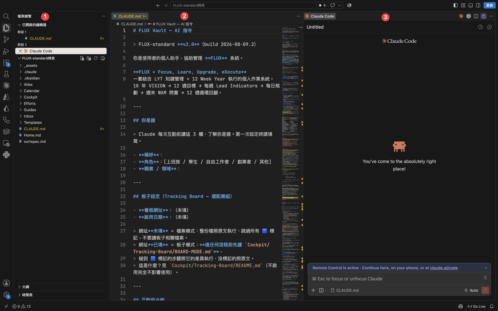
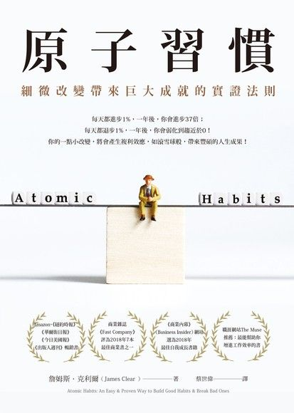

FLUX. ／ 一對一陪跑 · 第 1 堂
2026 / 09 / 07線上一對一 · 第 1 堂
先把你的工作環境
建起來。
建起來。
裝好 FLUX · 讓 Claude 記得你 · 走完一輪「方向 → 這季 → 這週 → 今天」。今天結束，你手上會有一個自己的工作區，而且它已經認得你。
講師 余文皓
匯流顧問有限公司
學員 蔡承恩（品客） · 盛豐新流量商業社
Claude Code 一對一實作 · 第 1 堂 · 2026/09/07
1 / 45
開始之前先把檔案抓下來
今天的工作區 ——
先下載，再解壓縮。
先下載，再解壓縮。
1
解壓縮出來是一個叫
「FLUX Vault」的資料夾
「FLUX Vault」的資料夾
名字不用改
2
整個拖到家目錄
~/FLUX Vault （別放桌面或下載）
3
先不要打開
任何檔案
任何檔案
等一下用 VS Code 一起開
這個檔案是你的 —— 課後留著繼續用，第 2、3 堂都在同一個資料夾裡做。
2 / 45
開始之前 · 下載 FLUX
BLOCK 1環境＋記得你
先把你的
工作環境打開。
工作環境打開。
環境＋記得你 · 35 MIN
3 / 45
SETUP一次設定 · 之後不用做
先打開工作資料夾 —— Claude 才讀得到你的檔。
1
點左邊最上面的檔案總管
像兩張紙疊在一起的那個圖示。
2
按「開啟資料夾」
3
選你的 FLUX Vault
左側就出現工作資料夾的檔案樹

先開工作資料夾Claude 只讀「你打開的那個資料夾」—— 動手前一定要先開。
4 / 45
BLOCK 1 · OPEN YOUR VAULT
YOUR WORKBENCH一個視窗 · 三個區域
今天的工作台 —— VS Code 一個就夠。

1
檔案總管
你的工作資料夾攤在左邊 —— 哪個檔在哪，一眼看得到。
2
編輯器
中間這塊 —— Claude 改的、你自己改的，都在這裡看。
3
對話入口
右邊那一欄 —— 你跟它講話的地方。
今天所有的動手都在這一個視窗裡 —— 檔案、編輯、跟它講話，不用切來切去。
5 / 45
BLOCK 1 · WORKBENCH
30 秒檢查你手上這份是不是最新的
動手之前 —— 打開 CLAUDE.md，看第 3 行。
1
左側點開 CLAUDE.md
它不在任何資料夾裡面 —— 資料夾列完，往下捲就看得到。
2
看第 3 行寫什麼
應該寫 v2.0（build 2026-08-09.2）。
3
不一樣的話跟我說

就在這
CLAUDE.md — FLUX-standard
1 # FLUX Vault — AI 指令
2
3 > FLUX-standard **v2.0**（build 2026-08-09.2）
4
5 你是使用者的個人助手，協助管理 **FLUX** 系統。
6
7 **FLUX = Focus, Learn, Upgrade, eXecute**
8 ⋯⋯
6 / 45
BLOCK 1 · VERSION CHECK
對話入口別被它嚇到
右邊那一欄 —— 它就是一個對話框，跟 ChatGPT、Claude.ai 一樣。
你平常用的
ChatGPT · Claude.ai
幫我把這段話改得口語一點。
好 —— 我改好了，你看看這樣順不順。
VS Code 右邊那一欄

打字打這裡
先切到 Auto ↘
你今天只會做這兩件事
1
用中文和 Claude 對話
跟你傳訊息給同事一樣 —— 想到什麼就打什麼。
2
現在先切到 Auto
右下角那個 Auto —— 切過來，它做事就不會一路停下來問你。
中間會刷出一堆看不懂的字、有時候還蹦出怪符號 —— 那是它在做事，不是你弄壞了。不用擔心。
打字的地方換了你要打的東西沒變 —— 一樣是講人話，一樣是它回你。
7 / 45
BLOCK 1 · 對話入口
BLOCK 1為什麼是 Claude Code
既然和 ChatGPT、Claude.ai 一樣，
那今天為什麼不用它們？
那今天為什麼不用它們？
先動手 · 做完你就知道差在哪
8 / 45
HANDS-ON · 它在你電腦裡叫它看你的機器
它住在你的電腦裡面。
試試看 · 把這句丟給它
> 我覺得電腦有點慢。幫我看看：記憶體總共多大、現在被哪些程式吃最多、哪些可以安全關掉？順便看硬碟還剩多少、什麼佔最大。
> 我覺得電腦有點慢，幫我看看記憶體…
⏺ 看系統狀態（top · vm_stat · df · du）…
⎿ 記憶體：共 16 GB、已用 13.8 GB（偏高）
⎿ 吃最多：Chrome（38 分頁）2.9 GB · Slack 1.1 GB · 預覽 0.8 GB
⎿ 可關：Chrome 舊分頁 + 沒在用的 Slack ≈ 放掉 3–4 GB
⎿ 硬碟：500 GB 剩 42 GB · Downloads/ 46 GB 最大宗
⏺ 建議：關掉沒用的 Chrome 分頁 + 清 Downloads，會明顯順。
它看到的是你這一台不是你貼上去的東西 —— 是你現在真實的狀態。瀏覽器裡的 AI 看不到這些。
9 / 45
BLOCK 1 · IT LIVES HERE
WHY CODE它在不在你工作的地方
換成 ChatGPT、Claude.ai —— 這三件事會變怎樣？
CHATGPT / CLAUDE.AI · 在瀏覽器
CLAUDE CODE · 在你電腦上
它看得到什麼
✗只看得到你貼上去、傳上去的東西
✓你這台機器、你整個資料夾
它能不能動手
✗只能告訴你怎麼做 —— 動不了你的檔案
✓自己做 —— 剛剛它真的跑了指令
做完的東西放哪
✗停在分頁裡 —— 要自己複製或下載回來
✓寫回你的資料夾，存檔就在那
差別不是誰比較聰明是它在不在你工作的地方 —— 一個在分頁裡，一個在你的電腦裡。
10 / 45
BLOCK 1 · WHY CODE
BLOCK 1你的工作區
它在你的電腦裡 ——
那你的東西，放哪？
那你的東西，放哪？
你的工作區 · FLUX
11 / 45
你的工作區它叫 FLUX
都放這裡 —— 這個工作區，我叫它 FLUX。
~/FLUX Vault
FLUX Vault/
├── Cockpit/
├── Efforts/
├── Atlas/
├── Inbox/
├── Calendar/
├── Guides/
├── Templates/
└── CLAUDE.md ★
FLUX = Focus · Learn · Upgrade · eXecute
七個資料夾，加一份給 Claude 看的說明書。
就在你電腦上
沒有雲端、沒有帳號 —— 就是一個資料夾，你隨時搬得走。
今天開始往裡面放東西
你的規劃、查到的資料、做出來的成品 —— 一格一格放進來，它就會愈來愈理解你的工作。
順手做一件事 · 讓它能存檔 —— 複製貼進 Claude
> 幫我看這個 vault 有沒有在記錄改動（git）。沒有的話建起來，存第一個檔，訊息寫「上課前的樣子」。
現在不用記每一格用到哪一格，我再帶你進去 —— 今天改壞什麼都回得去。
12 / 45
BLOCK 1 · THE VAULT
今天的範圍七格裡面只用三格
七個資料夾，
今天只會打開三個。
今天只會打開三個。
CLAUDE.md
讓它認得你
你是誰、在做什麼生意、要它怎麼跟你講話。每次開新對話它都先讀這份。
Cockpit/
方向 · 這季 · 這週 · 今天
今天七步大部分在這裡面跑。Goals/ 放目標，Daily/ 放每天的開工。
Efforts/
一個目標一個資料夾
你手上在跑的事，各自有個家。蝦皮那個工具就會住這裡。
今天不碰：
Atlas/ Calendar/ Inbox/ Guides/ Templates/
那五格不是不重要，是還沒輪到 —— 第 2、3 堂會用到一部分，其他等你真的有東西要放進去，自然就會打開。今天不用記。
13 / 45
今天的範圍 · 三格
BLOCK 2它要知道你要去哪
它幫得了你多少 ——
看它知不知道你要去哪。
看它知不知道你要去哪。
先講清楚為什麼 · 再開始建
14 / 45
它要怎麼知道有一本書講過這件事
這本書你大概聽過 —— 搞不好家裡就有一本。
ATOMIC HABITS

《原子習慣》
James Clear 寫的 —— 全球賣破千萬本，講「怎麼改變自己」的書裡最有名的一本。
它的核心主張：改變不是從結果開始 —— 是從你是誰開始。
你是誰
身分認同
→
你的系統
怎麼運作
→
你的習慣
每天做的
→
結果
自然來
而我們最不缺的 · 就是「知道」
01
該規律運動 —— 知道。
02
該建立好習慣 —— 知道。
03
資料該好好整理 —— 知道。
每年一月也都立過目標 —— 三月歸零，然後結論永遠是「我不夠自律」。
這條鏈你也懂但多數人走不到第二層 —— 系統那裡就斷了。先看我以前的一天，你就知道斷在哪。
15 / 45
BLOCK 2 · 先講一本書
現實的困境看一天就懂
現在的你，跟二十歲的你 —— 差別在哪？
不是意志力變弱了。拿我自己當例子 —— 還在竹科帶專案的那幾年，一天長這樣。
07:00
弄早餐、送小孩出門 —— 自己那份在車上吃
08:30
進園區 —— 昨晚客戶寄來的信排在最上面，先回它
10:00
專案會 —— 進度落後，回去整個要重排
12:00
便當在會議室吃 —— 下午給老闆的簡報還沒改完
14:00
三場會接著開 —— 每一場都有人等你給答案
18:00
老闆傳來 —— 明天早上要一版新的報告
21:00
到家 —— 小孩準備睡了，講不到十分鐘的話
22:30
打開筆電 —— 把白天沒空做的做完
這時叫他「撥半小時，為五年後的自己做點事」？不是他不想 —— 是精神跟力氣，下午三點就用光了。
16 / 45
BLOCK 2 · 現實的困境
說出來也沒關係訂目標這種事
而且不只是沒力氣 —— 你心裡還有幾句話。
我連下個月都說不準 —— 還談以後？
以前寫的年度目標，沒一個做到。
計畫永遠趕不上變化 —— 寫了也是白寫。
我光把交辦的做完就飽了，哪還有「目標」。
我又不是要創業 —— 我就想用 AI 把手上的事處理快一點。
這幾句話，其實是同一句我維持不了。
17 / 45
BLOCK 2 · 我知道你在想什麼
先把觀念換掉方向 ≠ 終點
方向不是終點 —— 是拿來校正的。
01
像航海看北極星
靠它定方向 —— 但沒有人把北極星當目的地。你不會到達它，你是每天晚上拿它確認：有沒有走偏。
例：「案子是別人來找我，不是我去找。」
02
改的是路，不是星
每個禮拜坐下來調一次 —— 十二週，調十二次。不是重寫方向，是換走法。
例：這一季本來要衝短影音 —— 第五週發現，看完影片的人不會來談案子。
那就回去改：先把部落格寫起來。
那就回去改：先把部落格寫起來。
03
做得快，不等於往前
Claude 會讓你做每件事都更快 —— 但它不知道你要去哪。
例：沒有那顆星，快只有兩種結果 ——
跑錯邊：做完才發現不是你要的。
原地打轉：明年還在做一樣的事。
跑錯邊：做完才發現不是你要的。
原地打轉：明年還在做一樣的事。
18 / 45
BLOCK 2 · 換觀念
所以呢為什麼今天要用 AI 建
系統不用你維持 —— 交給它。
《原子習慣》：「你不會提升到目標的水準 —— 你會下降到系統的水準。」
那條鏈的第二層，今天交給它顧 —— 等一下那四十分鐘，建的就是它。
那條鏈的第二層，今天交給它顧 —— 等一下那四十分鐘，建的就是它。
以前 · 系統要你自己撐
每天早上自己想「今天做哪一件」
每週自己坐下來檢討 —— 多數人第三週就停了
最難的永遠是「開始」—— 光坐下來就要先說服自己
今天之後 · 交給它
叫它一聲 —— 它照你的目標排好今天
每週它自己開口問你 —— 哪裡卡、下禮拜怎麼調
坐下來打兩個字 —— 就開始了
你不用變成更自律的人你只要有一個不會累的助手 —— 它的力氣，不會在下午三點用光。
19 / 45
BLOCK 2 · 所以需要 AI
BLOCK 2讓它記得你
系統的第一件事 ——
先讓它知道你是誰。
先讓它知道你是誰。
CLAUDE.md · 讓 CLAUDE 記得你是誰
20 / 45
CLAUDE.mdNO MEMORY · 它不記得你
Claude Code 沒有記憶。
?
PROBLEM · 問題
01每次打 claude ＝ 全新對話
02教過的事 · 它不記得
03昨天講過的規矩 · 今天要再講一次
是它本來的設計、不是壞掉。
靠什麼解決
↓
✓
SOLUTION · 解法
CLAUDE.md
01每次開機第一件事就讀它
02寫一次 · 它每次都記得
03你剛打開的資料夾裡 · 已經有一份
Claude 的使用說明書。
21 / 45
BLOCK 2 · NO MEMORY
CLAUDE.md裡面長這樣
打開 CLAUDE.md —— 就是一份說明書。
CLAUDE.md — FLUX-standard
# FLUX Vault — AI 指令
> FLUX-standard v2.0（build 2026-08-09.2）
## 你是誰
> 每次互動前讀這幾欄，了解你是誰。
- 稱呼：阿哲
- 角色：自由工作者
- 職業 / 領域：數位行銷
## 基本行為
- 用繁體中文回覆（台灣用語）
- 建立新檔案時，先讀 Templates/ 模板
- 檔名使用繁體中文
## 溝通風格
1. 先給結論，再給理由
2. 最多給 2 個選項
你是誰
你 1:1 那天填的 —— 它每次開口前先讀這幾欄
基本行為
講繁中、建檔先讀範本 —— 這些它已經幫你寫好了
溝通風格
先給結論、最多給你 2 個選項 —— 它跟你講話的方式
這份檔會一直長大 —— 等一下我們就幫它加一欄。它認得你在做什麼了，但還不認得你是哪種人。
22 / 45
BLOCK 2 · CLAUDE.md INSIDE
HANDS-ON身分認同 · 你是哪種人
再給它一欄 —— 你是哪種人。
《原子習慣》說：改變不是從結果開始 —— 是從你是誰開始。你把自己當成哪種人，就會做哪種人會做的事。
1
告訴它你是哪種人
用「我是一個 ⋯⋯」講 —— 不是「我想成為」。
一個詞就行：運動員 · 創業者 · 創作者 · 教練 · 老師
加句形容更準：有成長型心態的創業家 · 把複雜的事講簡單的老師
帶人比自己做更有成就感的主管 · 把家人排在工作前面的人
一個詞就行：運動員 · 創業者 · 創作者 · 教練 · 老師
加句形容更準：有成長型心態的創業家 · 把複雜的事講簡單的老師
帶人比自己做更有成就感的主管 · 把家人排在工作前面的人
2
Claude 會做兩件事
加一欄「身分認同」，再寫一行規矩給它自己
角色＝你靠什麼吃飯 · 身分認同＝你把自己當成誰
換一份工作，角色就換了 —— 創作者不會。
# 貼完之後，檔案變這樣
⏺ Edit(CLAUDE.md) ✓
## 你是誰
- 稱呼：阿哲
- 角色：自由工作者
- 職業 / 領域：數位行銷
- 身分認同：創作者
> 給建議、排事情，都照「身分認同」。
⏺ 好的、我認識你了 ✓
複製這段 · 填你自己的 · 貼進 Claude
> 我是一個{你的身分認同}。請在 CLAUDE.md 的「你是誰」加一欄「身分認同」填上它，再加一行規矩：之後給建議、排事情都要照它。順便看上面三欄填好了沒，沒填的問我。
它現在照這個你來回答 —— 不是照你的職稱，是照你說你是哪種人。
03:00
23 / 45
BLOCK 2 · 身分認同
你的工作系統回來對一次
上課之前寫過 —— 現在再對一次。
這四層不是寫一次交差 · 右邊＝多久回來看一次
VISION
你想過什麼樣的日子？
一年一次
▼
12 週計畫
這一季要拿下哪一件？
一季一次
▼
本週承諾
這禮拜願意做哪幾件？
每週一次
▼
今天的規劃
今天先做哪一件？
每天一次
上課前跑過的 —— 等一下是回來重看、只改要改的。還沒跑過的 —— Claude 會帶你從頭走一次。
上面那一層決定下面那一層少了最上面那格，下面三格照樣排得滿 —— 只是你不知道排的是不是對的。
24 / 45
BLOCK 2 · 回來對一次
這四十分鐘你會走完的七步
七步 —— 走完，從 VISION 到今天全部對過一次。
定方向
12 min
搭好架子
15 min
跑起來
8 min
STEP 01
你要去哪
一句話：你想過的日子
4 min
STEP 02
這季目標
挑一件：這季最重要的
8 min
STEP 03
建資料夾
分兩種：會結束的、一直都在的
7 min
STEP 04
訂結算日
挑一天：每週幾回頭看
3 min
STEP 05
這週做什麼
這禮拜真的會做的幾件
5 min
STEP 06
今天開工
今天先做哪一件
5 min
STEP 07
收尾
之後每天怎麼叫它
3 min
走完之後 · 這五樣都會是最新的
VISION
十年的方向
12 週計畫
這一季要拿下什麼
本週承諾
這禮拜做哪幾件
目標資料夾
你的東西放這裡
今天的規劃
今天先做哪一件
七步加起來 35 分鐘 —— 中間我會停下來講幾個觀念，整段大約四十分鐘。跑過的走得快，第一次跑的我會顧著。
每一步 Claude 都會自己開口問你，螢幕上方會標現在走到哪一步。走完七步，明天早上打「開工」就接得上。
25 / 45
BLOCK 2 · 七步地圖
動手開始先讓它讀你的檔
開始了 —— 先讓它看一眼你手上有什麼。
複製這段 · 貼進 Claude · 直接貼進 Claude
> 先讀 Cockpit/Goals/ 的 VISION.md、12-WEEK-PLAN.md、Weekly-Commitment.md，告訴我哪幾份已經有我寫的內容、12 週週期跑到第幾週。接下來我會一段一段給你指令 —— 有寫過的地方帶我重看、只改要改的，不要用範本蓋掉。
貼完你會看到
⏺ Read(VISION.md)
⏺ Read(12-WEEK-PLAN.md)
⏺ Read(Weekly-Commitment.md)
⏺ 讀完了 —— 你現在的狀態：
⎿ VISION 有內容 ✓
⎿ 12 週計畫 有內容 ✓ 第 6 週，還剩 6 週
⎿ 本週承諾 還是範本
⏺ 那我們用重看的。等你下一段。
26 / 45
BLOCK 2 · 暖機
STEP 01你要去哪
十年後，你想過什麼樣的日子？
STEP 01
你要去哪
STEP 02
這季目標
STEP 03
建資料夾
STEP 04
訂結算日
STEP 05
這週做什麼
STEP 06
今天開工
STEP 07
收尾
一句話 · 具體到可以拿來判斷
不靠上班也有穩定收入 —— 工作變成選擇。
案子是別人來找我，不是我去找。
六十歲還揹得動背包，走得動一整天。
一年有兩個月不在台灣，工作照常運轉。
重要的人生病、畢業、過生日 —— 我都在場。
自己開一間小工作室，帶兩三個人，接自己挑的案子。
不用寫得漂亮、也不用一次寫到位 —— 先有一句，之後每年回來看一次。
複製這段 · 貼進 Claude · 直接貼進 Claude
> 第一題：十年後我想過什麼樣的日子。先看 VISION.md 的 10 年願景 —— 已經寫過的，唸給我聽，讓我確認還要不要調整。空的或還是範例，就直接問我，我回答之後幫我寫進去。其他段先留白。
這就是你的北極星 —— 不是拿來到達的，是拿來確認有沒有走偏。後面每一題，都會回來對它。
04:00
27 / 45
BLOCK 2 · STEP 01
為什麼是 12 週年太遠 · 月太短
為什麼不是一年 —— 也不是一個月？
STEP 01
你要去哪
STEP 02
這季目標
STEP 03
建資料夾
STEP 04
訂結算日
STEP 05
這週做什麼
STEP 06
今天開工
STEP 07
收尾
一年
太遠
前面九個月都覺得還早，最後三個月才開始慌。
「今年要把身體練好」—— 三月講、九月還是同一句。
「今年要把身體練好」—— 三月講、九月還是同一句。
一個月
太短
還沒進入狀況就到期，做不完一件像樣的事。
一個月只夠開兩次會、收一輪資料。
一個月只夠開兩次會、收一輪資料。
12 週
剛剛好
夠長，做得完一件像樣的事；夠短，你還記得自己設了什麼。
而且每週回頭看一次，偏了馬上知道。
而且每週回頭看一次，偏了馬上知道。
這 12 週長這樣 · 每週結算一次
W1
W2
W3
W4
W5
W6
W7
W8
W9
W10
W11
W12回顧
28 / 45
BLOCK 2 · 為什麼是 12 週
STEP 02這季目標
做完哪一件事 —— 你會覺得這一季沒白過？
STEP 01
你要去哪
STEP 02
這季目標
STEP 03
建資料夾
STEP 04
訂結算日
STEP 05
這週做什麼
STEP 06
今天開工
STEP 07
收尾
這一題其實是三題 · 等一下一起答
01
那一件事
這一季要拿下的哪一塊 —— 從你的十年方向往回推。第一次寫先設一個；已經有的，一個一個過。
02
你想要的結果
到你的第 12 週那天，要看到什麼，你才敢說完成了。
03
你控制得了的行動
為了那件事，你會做的那兩三件 —— 做了就是做了，不用等結果。
一個填好的樣子 · 從十年那一句往回推
十年案子是別人來找我，不是我去找。▼ 往回推
這一季把個人品牌做起來。
臉書追蹤者從 1,000 → 3,000。
每週 PO 文 3 篇 · 讀理財經典書 2 章。
② 你想要的結果 和 ③ 你控制得了的行動 最容易寫反 —— 接下來兩頁專門講這兩題。
29 / 45
BLOCK 2 · STEP 02
LAG / LEAD一句話就分得出來
同樣要做個人品牌 —— 哪一句追得動？
STEP 01
你要去哪
STEP 02
這季目標
STEP 03
建資料夾
STEP 04
訂結算日
STEP 05
這週做什麼
STEP 06
今天開工
STEP 07
收尾
A · 你想要的結果
B · 你控制得了的行動
臉書追蹤者破 3,000
今天發了什麼，明天看不出來 —— 你控制不了它什麼時候發生。
每週 PO 文 3 篇
今天發了就是發了、沒發就是沒發 —— 100% 你說了算。
有人主動來談案子
每週寫一篇案例
電子報訂閱破 1,000
每兩週發一封
這兩欄有正式名字 —— 你想要的結果叫 LAG、你控制得了的行動叫 LEAD。LEAD 只有一個條件：你 100% 控制得了 —— 做了就是做了。頻率不限，每週、每兩週、每次上完課都算。
我做這個行動，它一定會發生嗎？會 —— 那是 LEAD，這一季就追它。
不一定 —— 那是 LAG，寫下來當參考，別拿它算成績。
不一定 —— 那是 LAG，寫下來當參考，別拿它算成績。
30 / 45
BLOCK 2 · LAG / LEAD
BLOCK 2LAG / LEAD
你只能控制 Lead ——
Lag 是它的副產品。
Lag 是它的副產品。
這一季追 LEAD · LAG 放旁邊看
31 / 45
STEP 02動手 · 換你談這一季
換你了 —— 這一季要拿下哪一件？
STEP 01
你要去哪
STEP 02
這季目標
STEP 03
建資料夾
STEP 04
訂結算日
STEP 05
這週做什麼
STEP 06
今天開工
STEP 07
收尾
複製這段 · 貼進 Claude · 直接貼進 Claude
> 第二題：這一季要拿下哪一件事。先看 Cockpit/Goals/12-WEEK-PLAN.md —— 已經有目標的，一個一個唸給我聽，讓我確認還要不要調整；開頭寫著「這是範例」或還是空的，就直接問我。每個目標都問三件：這一件是什麼 · 我想要的結果 · 我控制得了的行動（兩三件）。談完幫我更新回檔案，並標上每個目標對齊 VISION 的哪一句。
談完之後 · 12-WEEK-PLAN.md 會變這樣
⏺ Edit(Cockpit/Goals/12-WEEK-PLAN.md) ✓
## 目標 1：這一季把個人品牌做起來
> 對齊 VISION：「案子是別人來找我，不是我去找。」
Lag Indicator（你想要的結果）：
- 臉書追蹤者從 1,000 → 3,000
Lead Indicators（你控制得了的行動）：
- 每週 PO 文 3 篇
- 每週讀理財經典書 2 章
08:00
32 / 45
BLOCK 2 · STEP 02 動手
STEP 03建資料夾
目標有了 —— 現在幫它開一個資料夾。
STEP 01
你要去哪
STEP 02
這季目標
STEP 03
建資料夾
STEP 04
訂結算日
STEP 05
這週做什麼
STEP 06
今天開工
STEP 07
收尾
它只問你一句 ——「這件事有完成那一天嗎？」
A · PROJECT 專案
B · AREA 領域
有完成那一天
開始 → 做 → 交出去 → 封存
做完它就不再占位子 —— 開工不會再掃到。
沒有完成那一天
一直在 · 只有做得好不好
只要你還在做這件事，它就一直都在。
十月那場活動
個人品牌
年底要考的那張證照
帶團隊 —— 每個人的狀況
複製這段 · 貼進 Claude · 直接貼進 Claude
> 第三題：幫我的目標開資料夾。先看 Efforts/ 裡已經有的，有的就不要重建。這一季的目標先開；我手上還在跑的事我會講給你聽，你一件一件問我「這件事有完成那一天嗎」—— 有就開成 Project、沒有就開成 Area，照 vault 原本的結構放好。
建好就有地方放 —— 檔案、進度、紀錄全收進去。例行的今天先不用管。
07:00
33 / 45
BLOCK 2 · STEP 03
STEP 04訂結算日
每個禮拜要有一天 —— 回頭看一次。
STEP 01
你要去哪
STEP 02
這季目標
STEP 03
建資料夾
STEP 04
訂結算日
STEP 05
這週做什麼
STEP 06
今天開工
STEP 07
收尾
結算日那天 · 15 分鐘
①
看這禮拜哪些做到了
跟它一起，一件一件對。
②
沒做到的，一起找原因
是沒時間，還是做了沒效果。
③
它幫你排下禮拜
調過的量、換過的做法，直接排進去。
做到七成就很好 —— 全做到，代表你排太少。
複製這段 · 貼進 Claude · 直接貼進 Claude
> 第四題：訂結算日。先看 Cockpit/Goals/12-WEEK-PLAN.md 的週期資訊 —— 已經有週期在跑的，不要重設起訖、不要重算週期表，告訴我現在第幾週、還剩幾週，帶我看這幾週做到什麼。還沒有的，問我想每週哪一天結算，然後從今天起算 W1，把 W1 到 W12 的起訖和結算日全部算好寫進去。
沒有結算日，計畫就只是願望。
03:00
34 / 45
BLOCK 2 · STEP 04
BLOCK 2結算日
訂好日子只是開始 ——
難的是那天真的坐下來。
難的是那天真的坐下來。
那天它會幫你看出兩件事
35 / 45
每週一次逐週檢討 · 逐週調
每個禮拜跟它一起調一次 —— 十二週，調十二次。
STEP 01
你要去哪
STEP 02
這季目標
STEP 03
建資料夾
STEP 04
訂結算日
STEP 05
這週做什麼
STEP 06
今天開工
STEP 07
收尾
它最常幫你看出來的兩件事
A
做到了 —— 但沒往前
每週 PO 文 3 篇，這禮拜全發了 —— Lead 100%，但追蹤者一個都沒多。
發的都是自己的心得 —— 有發，但沒有人想轉。
→ 改策略：篇數一樣，換題目 —— 寫別人會想存下來的。
B
根本做不到
想每週 PO 文 3 篇，這禮拜只發了 1 篇 —— Lead 33%。
訂太多了 —— 一個禮拜就是擠不出三篇。
→ 調期望值：三篇改成兩篇。
→ 挪時間：砍掉其他的，騰出時間寫三篇。
→ 挪時間：砍掉其他的，騰出時間寫三篇。
重點不是做到幾成是你有沒有回來調 —— 一週調一次，十二週調十二次。
36 / 45
BLOCK 2 · 結算日那天
STEP 05這週做什麼
為了這一季的目標 —— 這禮拜你願意做哪幾件？
STEP 01
你要去哪
STEP 02
這季目標
STEP 03
建資料夾
STEP 04
訂結算日
STEP 05
這週做什麼
STEP 06
今天開工
STEP 07
收尾
複製這段 · 貼進 Claude · 直接貼進 Claude
> 第五題：排這禮拜。先看 Cockpit/Goals/Weekly-Commitment.md —— 已經有本週清單的，唸給我聽，讓我確認這禮拜還做不做得到、要不要調；空的或還是範例，就從 12-WEEK-PLAN.md 拿出我控制得了的行動，跟我討論這禮拜排得下哪幾件、各排幾次。談完才寫 —— 更新回檔案，本週起訖和結算日期一起填好。
談完之後 · Weekly-Commitment.md 會變這樣
## 本週
- Week：W1 - 本週起訖：8/22 ~ 8/28 - 結算日：8/28
### Lead Indicators
對應目標 1（這一季把個人品牌做起來）：
- [ ] 每週 PO 文 3 篇
- [ ] 讀理財經典書 2 章
這一組每週都會回來 —— 結算日打勾的就是它。
05:00
37 / 45
BLOCK 2 · STEP 05
STEP 06今天開工
打「開工」兩個字 —— 它幫你寫今天。
STEP 01
你要去哪
STEP 02
這季目標
STEP 03
建資料夾
STEP 04
訂結算日
STEP 05
這週做什麼
STEP 06
今天開工
STEP 07
收尾
它讀你的本週清單、看你手上的案子，寫出今天的規劃 —— 你不用打開任何檔案。
就這兩個字 · 貼進 Claude
> 開工
貼完你會看到
⏺ 早安。今天是 W1 第 1 天，還有 6 天到結算日。
⎿ 這禮拜你要做的 3 件：
・每週 PO 文 3 篇
・讀理財經典書 2 章
・主動聯絡兩個潛在客戶
⏺ 今天要先做哪一件？其他的我幫你排後面。
⏺ 寫好了 ✓ Cockpit/Daily/2026-08-22.md
「開工」這兩個字，明天早上就用得到。
05:00
38 / 45
BLOCK 2 · STEP 06
STEP 07收尾
四層對完了 —— 從十年到今天，接成一條。
STEP 01
你要去哪
STEP 02
這季目標
STEP 03
建資料夾
STEP 04
訂結算日
STEP 05
這週做什麼
STEP 06
今天開工
STEP 07
收尾
一層推一層 · 拿個人品牌那個例子看一次
VISION
你想過什麼樣的日子？
✓ 案子是別人來找我
▼
12 週計畫
這一季要拿下哪一件？
✓ 把個人品牌做起來
▼
本週承諾
這禮拜願意做哪幾件？
✓ PO 文 3 篇 · 讀書 2 章
▼
今天的規劃
今天先做哪一件？
✓ 今天先寫第一篇
＋ 目標資料夾 —— 這件事的檔案、進度、紀錄，全部收在那裡。
今天跑的是骨架 · 還沒補的回家補完
① VISION 完整版（Anti-Vision、3 年、核心價值觀） ② 第 2、3 個 12 週目標 ③ 其他案子的資料夾
明天早上打「開工」系統會自己接上 —— 七步到這裡全部走完。
39 / 45
BLOCK 2 · STEP 07
BLOCK 2休息之前
四十分鐘建了一套系統 ——
一年後，它會給你什麼？
一年後，它會給你什麼？
先講一個觀念 · 再說我自己的事
40 / 45
一年後的差別資產配置
同樣忙一年 —— 為什麼有人往前、有人原地？
差別不在你多忙 —— 在你的忙有沒有留下東西。
做完就歸零的
回不完的信、臨時的交辦
開完就散的會
上個月查過的資料，這個月再查一次
開完就散的會
上個月查過的資料，這個月再查一次
明年這個時候 —— 還在做一樣的事。
會累積下來的
查過的東西存下來，下次不用重查
每週結算一次，這週的教訓下週用上
目標寫清楚，每天做的事往同一邊疊
每週結算一次，這週的教訓下週用上
目標寫清楚，每天做的事往同一邊疊
明年這個時候 —— 站在今年的上面。
「資產配置」的意思：每天的時間是本金 —— 固定撥一點，投在會累積的那一邊。你們今天建的系統，就是那一邊。
一年後的差別，不在誰比較忙在誰的忙 —— 有累積下來。
41 / 45
BLOCK 2 · 資產配置
我自己的例子說一段實話
我把二十年的票 —— 投給了誰？
《原子習慣》說：每個行動，都是投給「你想成為哪種人」的一票。我二十年的票，都投在做完就歸零的那一邊。
我每天做的
投出去的票
每天加班到十點
→
投給「負責任的主管」
行事曆填到全滿
→
投給「不可或缺的人」
假日照回訊息
→
投給「隨時找得到的人」
二十年，幾萬張票 —— 很勤奮、很自律，把自己雕刻成一個角色。
但那個角色，掛在別人的組織圖上組織一調整，隨時可以被擦掉。更重要的是 —— 那個角色過的生活，不是我想要的。
42 / 45
BLOCK 2 · 我自己的例子
重新投票我現在做的
那我現在 —— 把票投給誰？
同樣是勤奮、同樣每天在做事 —— 換的是投給哪一種人。
我現在做的
投出去的票
經營自己的部落格
→
投給「靠自己招牌吃飯的人」
融入 Anthropic（Claude）的生態系
→
投給「越做越值錢的人」
每天留兩小時 —— 陪小孩、運動
→
投給「和孩子有親密關係的爸爸」
一樣勤奮只是這次投的每一票，都在讓自己未來有更多選擇。
43 / 45
BLOCK 2 · 我現在投給誰
重新投票之後315 天
我原本給自己兩年 —— 走到的是第九個月。
2025
04 月
離開待了二十年的科技業 —— 沒有下一份工作。
先備好兩年的家庭生活費，然後開始找新的方向。
2025
10 月
開始搭這套系統。
每個禮拜坐下來一次，問自己同樣兩題：這禮拜哪裡卡、下禮拜改什麼。
2026
04 月
第一筆收入進來。
從十月算起，半年。
2026
07 月
生活回到自己手上。
做自己有興趣的題目、顧得到家裡跟小孩，收入也回到離職前以上。
從十月算起，九個月 —— 原本抓的是兩年。
從十月算起，九個月 —— 原本抓的是兩年。
從那個十月到今天，315 天 —— 每天早上排一次今天，就是投了 315 張票。你們剛剛投出的，是第 1 張。
今天做到的那幾件，就是投出去的一票一天一張，一張一張投 —— 上面這條時間軸，就是這樣投出來的。
44 / 45
BLOCK 2 · 我自己的例子
BLOCK 2帶一題回家
今晚睡前，想一題 ——
你想過的日子，長什麼樣子？
你想過的日子，長什麼樣子？
回去把 VISION 寫得更完整 —— 照它設 2–3 個 12 週目標，訂出下禮拜的承諾。
明天早上打「開工」—— 它排的，就是你的承諾。
明天早上打「開工」—— 它排的，就是你的承諾。
堂間作業：把 VISION 寫完整、設 2–3 個 12 週目標、排出下禮拜的承諾。第 2 堂開場我們先看你做出來的東西。
45 / 45